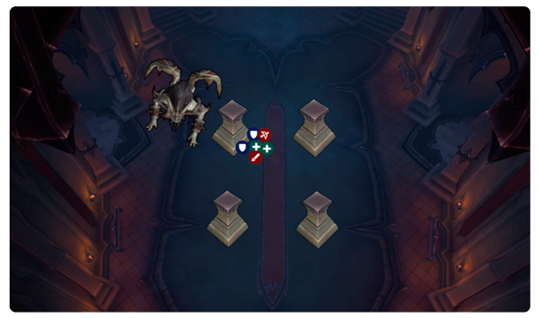
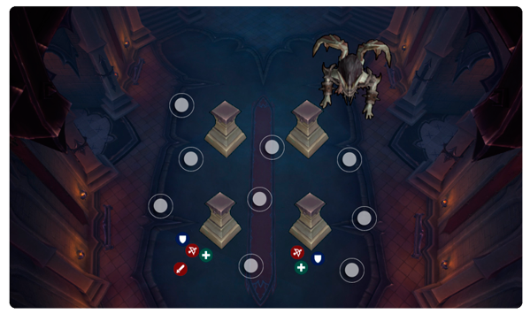

Guia de Alachilla en la banda Castillo de Nathria en dificultad NORMAL
Alachilla es un monstruoso murcielago ciego encargado de proteger el vestíbulo de entrada del Castillo Nathria, localiza a sus víctimas con horribles gritos que rebotan en las paredes de la cámara. El último sonido escuchado por los intrusos en la Gran Entrada es el grito del monstruo mientras desciende sobre su victima.
Esta pelea se divide en 2 fases, luego de que termine la fase 2 vuelve a la primera, pero durante ambas fases nos marcara a todos con un sangrado que se limpia al pisar las zonas manchadas de sangre
Fase 1
Mordisco desangrador (TANQUES)
Es un golpe fuerte dirigido al jugador que tiene como objetivo el jefe, cada vez que lo utiliza aplica 10 marcas de sangrado, por lo que los tanques deberan cambiar el agro cada vez que el jefe utilize esta habilidad, pueden limpiar las marcas en los charcos de sangre del suelo o dejar pasar el tiempo ya que el dot disminuye con el tiempo si no tenes el agro del boss
CAMBIAR EL JEFE DESPUES DE CADA MORDISCO DESANGRADOR
Barrido Ciego (TANQUES)
Simplemente es un ataque en cono forntal de daño AOE, el boss siempre debe estar de espaldas a la raid
CUIDADO AL CAMBIAR EL AGRO, SIEMPRE DE ESPALDAS A LA RAID
Chillido Ensordecedor (RAID)

Es una habilidad que se puede evadir perdiendo la vision del jefe, antes de que termine el casteo de la misma toda la raid incluido los tanques deben posicionarse detras de algun pilar para no ser impactados por la misma, luego del final de la habilidad todos los jugadores dejaran un area roja en el suelo que hace poco daño magico(en la que se pueden limpiar los sangrados), la misma no hace mas daño por mas de que haya 2 manchas en el mismo lugar, es decir que la pueden pisar sin problemas si estan con toda la vida
TODA LA RAID DEBE ESCONDERSE
Ecolocalizacion (INDIVIDUAL)
Esta habilidad va a marcar a un jugador aleatorio, tiene que alejarse del grupo y usar un defensivo (ataque fisico), el jugador marcado tendra una flecha roja en la cabeza de su personaje y un area roja que lo sigue
ALEJATE DEL GRUPO PARA NO DAÑAR A TUS AMIGOS
Fase 2 (se activa al llegar al 100% de energia)
Durante esta fase el jefe castea Empacho de sangre reduciendo el daño recibido un 99%, por lo que solo nos vamos a concentrar en esquivar todas las habilidades que use
Velo de Sangre (RAID)
Los jugadores que esten a menos de 12 metros de distancia del jefe moriran sin poder hacer nada
SIEMPRE ALEJADO DEL BOSS, LO MAS QUE PUEDAS!!
Chillido Ensordecedor (RAID)
Repite la habilidad de la fase1
TODA LA RAID DEBE ESCONDERSE
Sonar Resonante (RAID)
Unas areas blancas saldran hacia todos lados del boss, y se moveran rebotando por toda la sala, tenes que evitar que te golpeen. Si una te golpea te asustara durante unos segundos y recibiras daño del boss en esa ubicacion
ESQUIVA TODAS LAS ZONAS BLANCAS, SI GOLPEA A UN ALIADO ALEJATE DE EL
Video recomendado del encuentro
Autores: